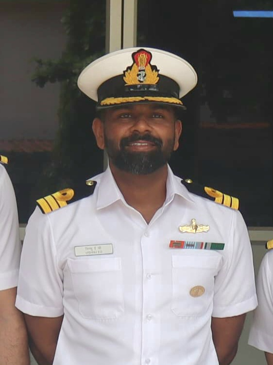
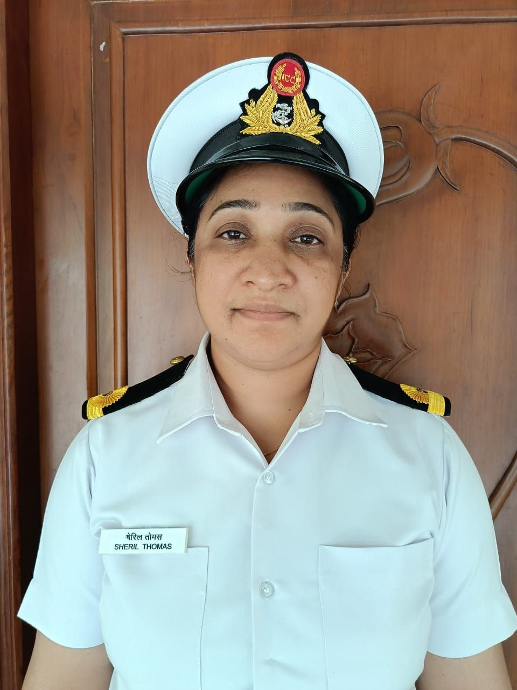
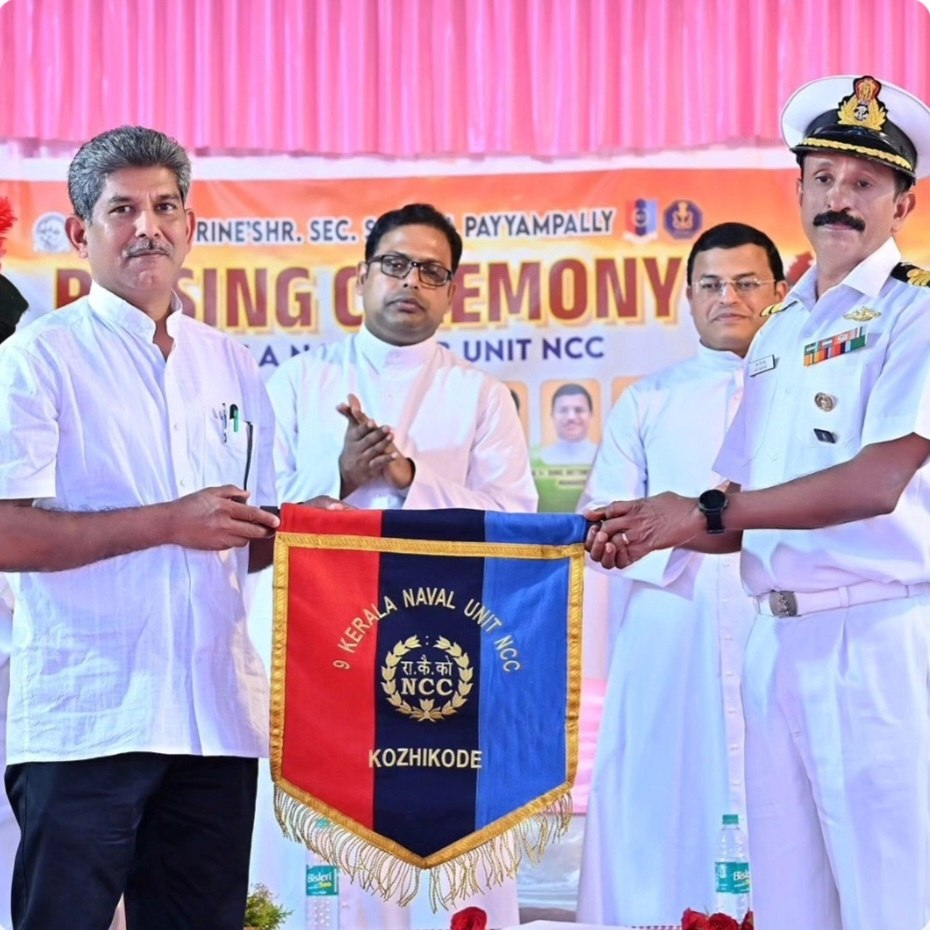
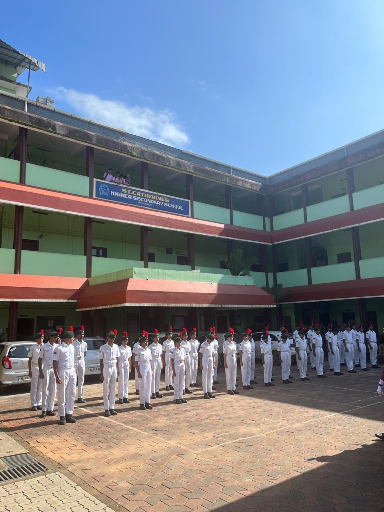
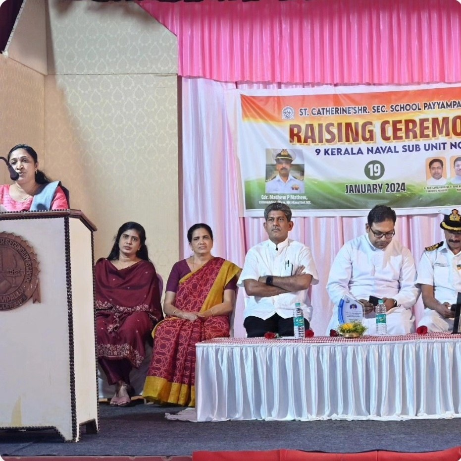
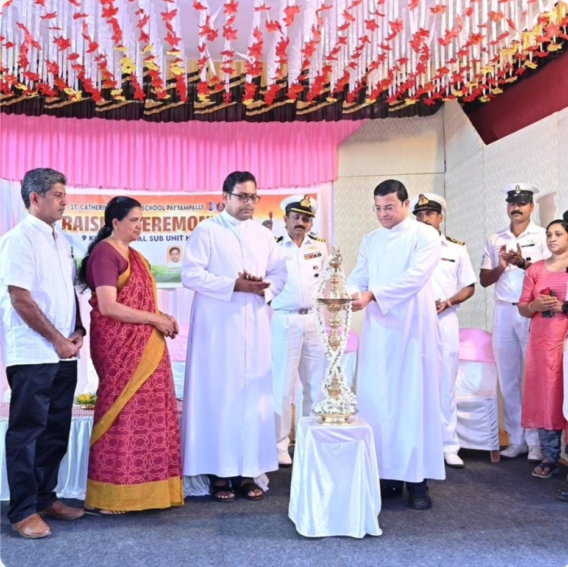
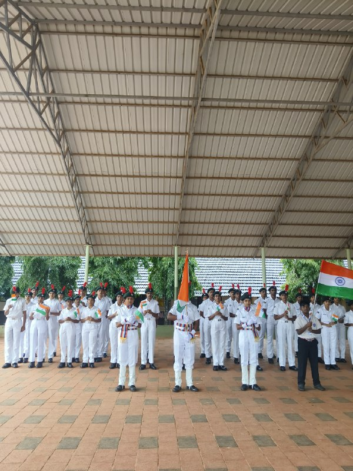

Official Website
9(K) Naval Unit NCC
St. Catherine's HSS Payyampally
Discipline • Leadership • Service
Explore Our JourneyOfficial Website
Discipline • Leadership • Service
Explore Our JourneyEstablished
Cadets
Naval Unit NCC
The Naval Wing of the National Cadet Corps
(NCC) at St. Catherine's Higher Secondary
School, Payyampally, was inaugurated on 19
January 2024 by Commander Mathew P. Mathew,
the then Commanding Officer of 9(K) Naval Unit NCC, under the guidance of Associate NCC Officer Sub Lieutenant Sheril Thomas.
Our unit aims to develop discipline, leadership, patriotism and social responsibility among students and shape them into responsible citizens and future leaders of our nation.

Commanding Officer
9(K) Naval Unit NCC

Associate NCC Officer
St. Catherine's HSS Payyampally
Develop self-discipline and responsibility.
Learn confidence and leadership.
Experience camps and exciting activities.
Serve society and contribute to nation building.
Naval training and personality development.
Community service and awareness programmes.
Celebrations and competitions.
Adventure activities and camps.
Establishment of the Naval NCC Unit at St. Catherine's HSS Payyampally.
Training activities, community service and leadership development.
Preserving the Legacy of the 9(K) Naval Unit NCC through every batch of cadets.

The first batch of the 9(K) Naval Unit NCC, laying the foundation of discipline, leadership and service.
View Crew
Continuing the proud traditions of Naval NCC through service and dedication.
View Crew
The current batch carrying forward the pride and legacy of the Naval Wing.
View Crew





📢 NCC Enrolment for Plus One students.
📢 Submit achievement certificates to the NCC Room.
📢 Participate in Anti-Drug Poster and Paper Bag Making activities.
Wayanad, Kerala - 670646
Email: navalnccschss@gmail.com
Instagram: @navalncc.catherines